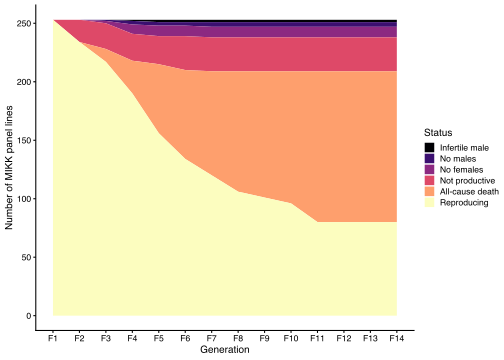
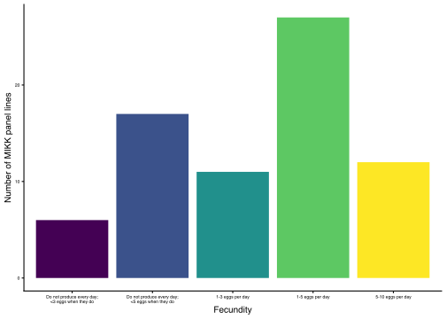
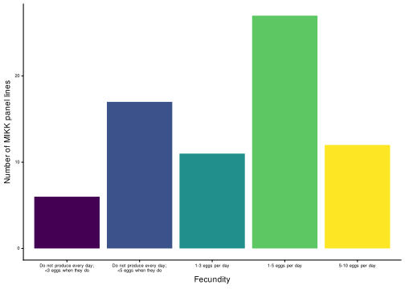

library(here)
source(here::here("code", "scripts", "fecundity", "source.R"))Data saved here (copied from Felix’s table in the paper): data/fecundity/20210212_inbreeding.csv
raw_dat = here::here("data", "fecundity", "20210212_inbreeding.csv")
inbreed_df = readr::read_csv(raw_dat)##
## ── Column specification ───────────────────────────────────────────────────────────────────────────────────────────────────
## cols(
## MIKK = col_character(),
## `Inbreeding (Generation)` = col_character(),
## `not productive` = col_double(),
## `infertile male` = col_double(),
## `no males` = col_double(),
## `no females` = col_double(),
## `all cause death` = col_double(),
## `N of strains lost` = col_character()
## )total_crosses = 253
inbreed_df_tidy = inbreed_df %>%
# Remove final row, which makes `N of strains lost` character
dplyr::slice(-c(11,12)) %>%
# Change column names
dplyr::select(GENERATION = `Inbreeding (Generation)`,
N_LOST_TOTAL = `N of strains lost`,
everything()) %>%
# Make N_LOST integer
dplyr::mutate(N_LOST_TOTAL = as.integer(N_LOST_TOTAL)) %>%
# Remove MIKK column
dplyr::select(-MIKK) %>%
# Get cumulative lost and N_SURVIVING
dplyr::mutate(N_LOST_CUM = cumsum(N_LOST_TOTAL),
N_SURVIVING = total_crosses - N_LOST_CUM) %>%
# Replace
dplyr::mutate(dplyr::across(c(`not productive`,
`infertile male`,
`no males`,
`no females`,
`all cause death`),
~tidyr::replace_na(.x, 0))) %>%
# Get cumulative lost for each category
dplyr::mutate(dplyr::across(c(`not productive`,
`infertile male`,
`no males`,
`no females`,
`all cause death`),
~cumsum(.x))) %>%
# Amend GENERATION column
dplyr::mutate(GENERATION = stringr::str_extract(GENERATION, "(?:F\\d{1,2})")) %>%
# Add first row
rbind(., c("F1", rep(0,7), total_crosses)) %>%
# Add rows for F12-14
rbind(., dplyr::filter(., GENERATION == "F11") %>%
dplyr::slice(rep(1:n(), each = 3)) %>%
dplyr::mutate(GENERATION = c("F12", "F13", "F14"))) %>%
# Factorise GENERATION
dplyr::mutate(GENERATION = factor(GENERATION, levels = paste("F", seq(1:14), sep = ""))) %>%
# Order
.[order(.$GENERATION), ] %>%
# Gather
tidyr::pivot_longer(cols = c(`not productive`,
`infertile male`,
`no males`,
`no females`,
`all cause death`,
N_SURVIVING),
names_to = "STATUS",
values_to = "N") %>%
# Convert `N` to integer
dplyr::mutate(N = as.integer(N))
knitr::kable(head(inbreed_df_tidy))| GENERATION | N_LOST_TOTAL | N_LOST_CUM | STATUS | N |
|---|---|---|---|---|
| F1 | 0 | 0 | not productive | 0 |
| F1 | 0 | 0 | infertile male | 0 |
| F1 | 0 | 0 | no males | 0 |
| F1 | 0 | 0 | no females | 0 |
| F1 | 0 | 0 | all cause death | 0 |
| F1 | 0 | 0 | N_SURVIVING | 253 |
recode_vec = c("Infertile male",
"No males",
"No females",
"Not productive",
"All-cause death",
"Reproducing")
names(recode_vec) = c("infertile male",
"no males",
"no females",
"not productive",
"all cause death",
"N_SURVIVING")
test = inbreed_df_tidy %>%
# geom_area() seems to need `x` to be numeric
dplyr::mutate(GENERATION = as.integer(gsub("F", "", GENERATION))) %>%
# recode STATUS values and order
dplyr::mutate(STATUS = dplyr::recode(STATUS, !!!recode_vec),
STATUS = factor(STATUS, levels = recode_vec))# %>%
out2 = ggplot(test) +
geom_area(aes(x=GENERATION,
y=N,
fill = STATUS)) +
# geom_text(aes(x=GENERATION, y=N, label = STATUS)) +
scale_fill_viridis_d(option = "magma") +
scale_x_continuous(breaks = unique(test$GENERATION),
labels = paste("F", unique(test$GENERATION), sep = "")) +
theme_cowplot(font_size = 10) +
xlab("Generation") +
ylab("Number of MIKK panel lines") +
labs(fill = "Status") +
theme(panel.grid = element_blank())
# theme(legend.position=c(0.2, 0.3),
# legend.box.background = element_blank())
out2
in_file = here::here("data", "fecundity", "20210205_semiquantitative.xlsx")
df_semi = readxl::read_xlsx(in_file, range = "A1:C81")
out_file = here::here("data", "fecundity", "20210208_semiquant.csv")
# Get strain levels
strain_levels = unique(df_semi$Pair)
# Create recode vector
date_recode = c("Feb 2019", "Jul 2020")
names(date_recode) = c("2/19", "7/20")
recode_vec_1 = c(0, 1, 2, 3, 4, 5)
names(recode_vec_1) = c(0, "o", "x", "x/", "xx", "xxx")
recode_vec_2 = c("Not producing",
"Do not produce every day; <3 eggs when they do",
"Do not produce every day; <5 eggs when they do",
"1-3 eggs per day",
"1-5 eggs per day",
"5-10 eggs per day")
names(recode_vec_2) = c(0, 1, 2, 3, 4, 5)
recode_vec_3 = gsub("; ", ";\n", recode_vec_2)
# Tidy
semi_out = df_semi %>%
# pivot fecundity
tidyr::pivot_longer(cols = contains("fecundity"),
names_to = "DATE",
names_prefix = "fecundity ",
values_to = "FECUNDITY") %>%
# recode fecundity measures
dplyr::mutate(DATE = dplyr::recode(DATE, !!!date_recode),
FECUNDITY = dplyr::recode(FECUNDITY, "xx/" = "xx"),
FECUNDITY = dplyr::na_if(FECUNDITY, "do not prod. Yet"),
FECUNDITY = ifelse(is.na(FECUNDITY), 0, FECUNDITY),
FECUNDITY = dplyr::recode(FECUNDITY, !!!factor(recode_vec_1)),
KEY = dplyr::recode(FECUNDITY, !!!recode_vec_2)) %>%
# rename STRAIN
dplyr::rename(STRAIN = Pair) %>%
# factorise
dplyr::mutate(STRAIN = factor(STRAIN, levels = strain_levels)) %>%
# write to file
readr::write_csv(out_file, na = "")
knitr::kable(head(semi_out))| STRAIN | DATE | FECUNDITY | KEY |
|---|---|---|---|
| 4-1 | Jul 2020 | 2 | Do not produce every day; <5 eggs when they do |
| 4-1 | Feb 2019 | 2 | Do not produce every day; <5 eggs when they do |
| 4-2 | Jul 2020 | 2 | Do not produce every day; <5 eggs when they do |
| 4-2 | Feb 2019 | 4 | 1-5 eggs per day |
| 5-1 | Jul 2020 | 2 | Do not produce every day; <5 eggs when they do |
| 5-1 | Feb 2019 | 4 | 1-5 eggs per day |
# Process data
final_hor_df = semi_out %>%
dplyr::mutate(KEY = gsub("; ", ";\n", KEY),
KEY = factor(KEY, levels = recode_vec_3)) %>%
dplyr::filter(DATE == "Jul 2020") %>%
dplyr::mutate(STRAIN = factor(STRAIN, levels=unique(STRAIN[order(KEY,decreasing = T)]))) %>%
# remove "Not producing"
dplyr::filter(KEY != "Not producing")
# order by category
# Generate histogram
fec_count = final_hor_df %>%
ggplot() +
geom_histogram(aes(KEY, fill = KEY),
stat = "count") +
scale_fill_viridis_d() +
theme_cowplot(font_size = 10) +
xlab("Fecundity") +
ylab("Number of MIKK panel lines") +
guides(fill = F) +
theme(axis.text = element_text(size = 5))
fec_count
final = ggdraw() +
draw_plot(out2, x = 0, y = 0, width = .55, height = 1) +
draw_plot(fec_count, x = .55, y = 0, width = .45, height = 1) +
draw_plot_label(label = c("A", "B"), size = 15,
x = c(0, 0.55), y = c(1, 1))
final
# SVG
ggsave(here("plots", "fecundity", "20210301_final_figure.svg"),
device = "svg",
units = "cm",
height = 11.2,
width = 30)
# PNG
ggsave(here("plots", "fecundity", "20210301_final_figure.png"),
device = "png",
dpi = 400,
units = "cm",
height = 11.2,
width = 30)